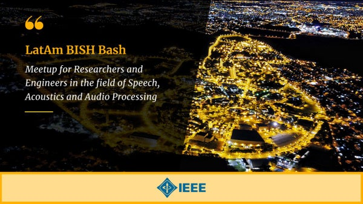

Latin American MIR Workshop
I co-organize LAMIR, a satellite of ISMIR for students and researchers in the region. The first workshop was in Rio de Janeiro in 2024, with open proceedings. The next is in Belo Horizonte, 15–17 December 2026.
Besides papers, a large part of the work is building the communities I want to belong to: Latin American MIR, IEEE mentoring, and the conferences of the field.
This page collects organizing, reviewing, mentoring, and selected talks. Courses and software live on Resources.
The thread is Latin American networking in audio and music, and mentoring that is not only local to NYU.
I co-organize LAMIR, a satellite of ISMIR for students and researchers in the region. The first workshop was in Rio de Janeiro in 2024, with open proceedings. The next is in Belo Horizonte, 15–17 December 2026.

Since 2021 I have organized the BISH Bash LatAm meetups: informal, free gatherings for researchers, students, and industry people working on audio, music, and machine listening in Latin America.
I mentor through IEEE SigMA, IEEE ME-UYR (2022, 2024), WiMIR, and LXAI NeurIPS (2023). At NYU I also mentor in ARISE and REU.
Invited talks and a tutorial. Internal NYU seminars are omitted.
IEEE Signal Processing Society SLTC / AASP webinar. Event · Video
Invited talk, VIII Jornadas de Acústica, Audio y Sonido, Buenos Aires (remote).
Keynote, Latin American Music Information Retrieval Workshop, Rio de Janeiro.
Invited talk, MUSAiC day, KTH Royal Institute of Technology, Stockholm.
Invited panelist, Simons Foundation Presents, New York. Event
Invited panelist, NYU Center for Latin American and Caribbean Studies. Event
Tutorial at ISMIR, with Matthew E. P. Davies and Sebastian Böck. Tutorial book